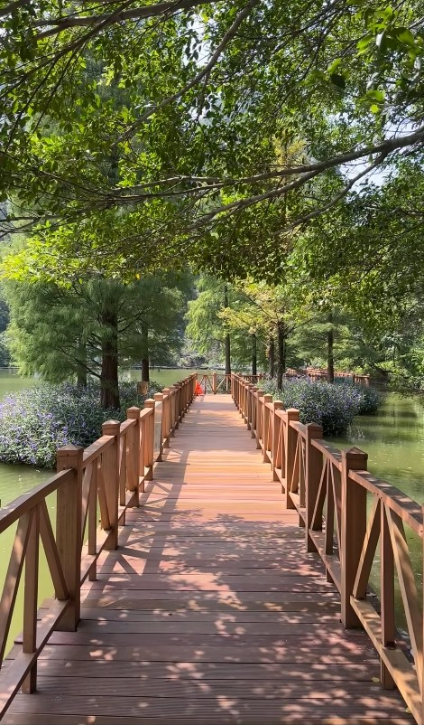
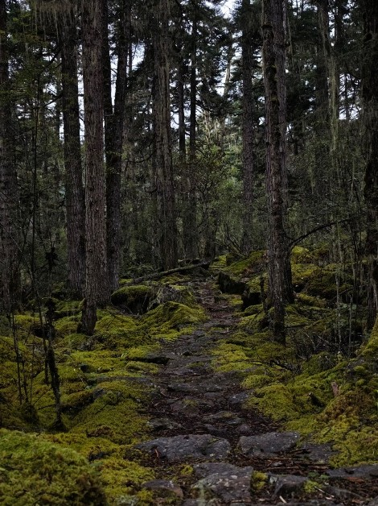
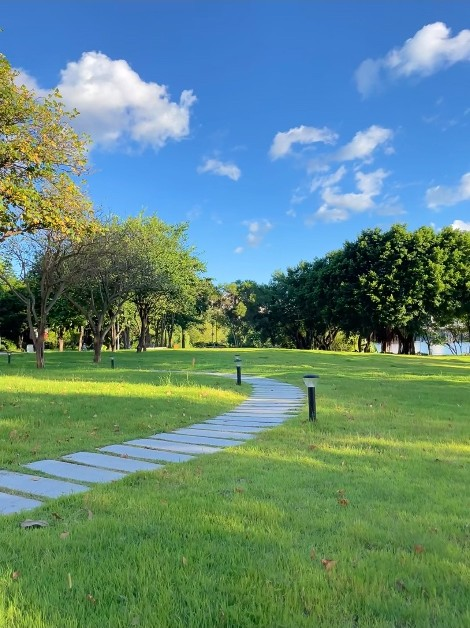
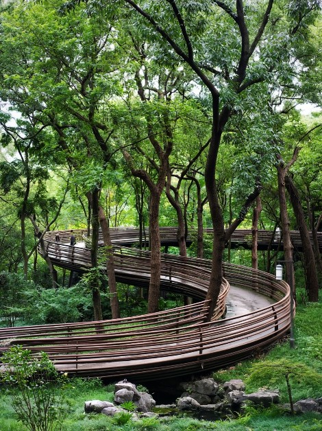
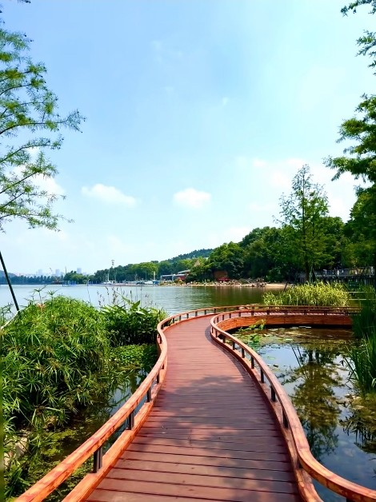
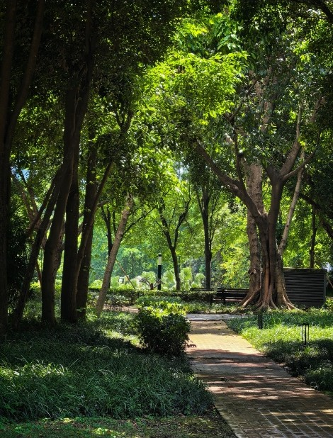

Creekside Morning Loop
A peaceful 2.4 km waterside route crossing a timber footbridge surrounded by greenery and waterside blooms.
Route details
Distance: 2.4 km loop • Surface: Timber bridge and packed path • Best time: Early morning.
Explore local park circuits, shaded trails, and waterside loops for daily walks and cognitive resets.

A peaceful 2.4 km waterside route crossing a timber footbridge surrounded by greenery and waterside blooms.
Distance: 2.4 km loop • Surface: Timber bridge and packed path • Best time: Early morning.

A quiet 3.1 km wooded loop through mossy terrain, uneven stones, and tall evergreen trees.
Distance: 3.1 km loop • Surface: Natural earth, roots, and rock • Best time: Midday shade.

An open 1.8 km grass-and-stone circuit with wide sky views, low path lights, and mature shade trees.
Distance: 1.8 km circuit • Surface: Stepping stones and lawn • Best time: Clear sunny afternoons.

A scenic 2.7 km elevated walkway winding among tree crowns with views over mossy rock formations below.
Distance: 2.7 km loop • Surface: Elevated timber walkway • Best time: Late afternoon.

A relaxed 2.0 km waterside stroll featuring a sweeping wooden boardwalk over calm pond water and shoreline shrubs.
Distance: 2.0 km loop • Surface: Wooden boardwalk • Best time: Morning or dusk.

A calm 1.5 km brick-lined neighborhood walk with park benches, trimmed shrubs, and dense overhead foliage.
Distance: 1.5 km loop • Surface: Brick walkway • Best time: Short study or work breaks.